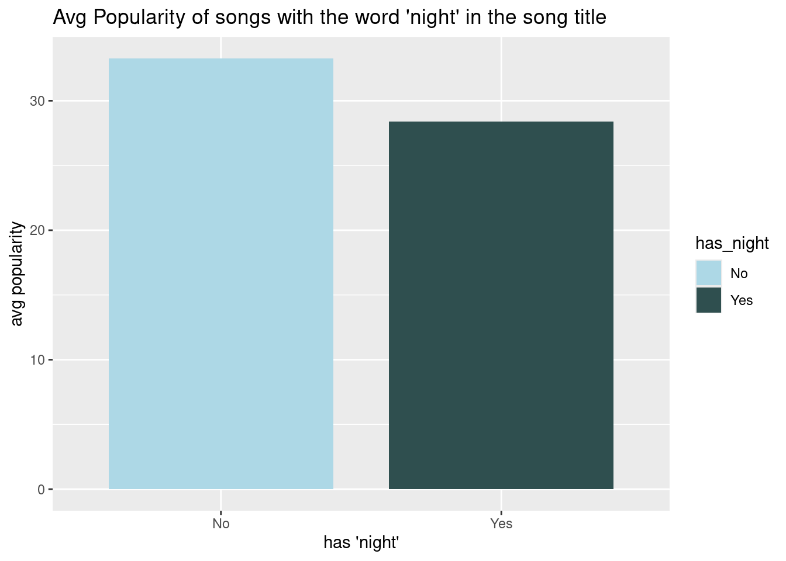

library(tidyverse)
library(ggplot2)
library(dplyr)
dataset <- read.csv("dataset.csv")
spotify <- datasetProject 2
An Analysis of the Spotify Tracks Dataset on Kaggle
The data set “Spotify Tracks Dataset” is originally made by Maharshi Pandya (2022), where is was posted on Kaggle.com (link: https://doi.org/10.34740/KAGGLE/DSV/4372070). The data was originally collected using Spotify’s Web API and Python.
It has about 75,000 different tracks that spans over 100 genres. Because the data set is so large, I will try to organize some of it. First, I will see the frequency of each artist and each album.
artist_freq <- spotify |>
count(artists, sort = TRUE)
album_freq <- spotify |>
count(album_name, sort = TRUE)Now, I want to see the top 10 most frequent songs and top 10 most frequent artists.
top_10_artists <- head(artist_freq, 10)
top_10_album <- head(album_freq, 10)Now, I want to plot my findings.
ggplot(top_10_artists, aes(x = reorder(artists, n), y = n)) +
geom_bar(stat = "identity", fill = "magenta") +
coord_flip() +
labs(title = "Top 10 most frequent artists",
x = "artist name",
y = "count")ggplot(top_10_album, aes(x = reorder(album_name, n), y = n)) +
geom_bar(stat = "identity", fill = "purple") +
coord_flip() +
labs(title = "Top 10 most frequent albums",
x = "album name",
y = "count")Moving on, we are going to look at the song names. I am curious to know if certain words in the song title make it more popular. I am going to look at the most frequent words in song names.
words <- spotify |>
mutate(track_name = tolower(track_name)) |>
pull(track_name) |>
str_extract_all("\\b\\w+(?:'\\w+)?\\b") |>
unlist() |>
as.data.frame() |>
setNames("word") |>
count(word, sort = TRUE) |>
filter(!(word %in%
c("the", "a", "of", "and", "you", "me", "i", "to", "my"))) |>
arrange(desc(n)) |>
head(50)
view(words)Although, we cannot filter out every filler word in songs, we can still see that there are some words such as “love”, “Christmas”, “life”, or “night”. I want to make a comparison by using graphs to see if having a certain word in the song name makes it more popular. We can calculate the average popularity score to look at the relation between popularity and a certain key word in a song title. Popularity is a quantitative variable in the data set. We take the mean of it to find the average.
First we will look at songs with the word “love” in them
spotify <- spotify |>
filter(!is.na(track_name))|>
mutate(has_love = ifelse(str_detect(track_name, regex("\\blove\\b", ignore_case = TRUE )), "Yes", "No"))
popularity <- spotify |>
group_by(has_love) |>
summarise(avg_popularity = mean(popularity, na.rm = TRUE))
popularity |>
ggplot(aes(x = has_love, y = avg_popularity, fill = has_love)) +
geom_bar(stat = "identity", width = 0.8) +
labs(title = "Avg Popularity of songs with the word 'love' in the song title",
x = "has 'love'",
y = "avg popularity") +
scale_fill_manual(values = c("Yes" = "deeppink3", "No" = "cornsilk4"))Now we will look at songs with the word “Christmas” in the song name
spotify <- spotify |>
filter(!is.na(track_name))|>
mutate(has_christmas = ifelse(str_detect(track_name, regex("\\bchristmas\\b", ignore_case = TRUE )), "Yes", "No"))
popularity <- spotify |>
group_by(has_christmas) |>
summarise(avg_popularity = mean(popularity, na.rm = TRUE))
popularity |>
ggplot(aes(x = has_christmas, y = avg_popularity, fill = has_christmas)) +
geom_bar(stat = "identity", width = 0.8) +
labs(title = "Avg Popularity of songs with the word 'christmas' in the song title",
x = "has 'christmas'",
y = "avg popularity") +
scale_fill_manual(values = c("Yes" = "brown3", "No" = "darkolivegreen4")) theme_minimalfunction (base_size = 11, base_family = "", base_line_size = base_size/22,
base_rect_size = base_size/22)
{
theme_bw(base_size = base_size, base_family = base_family,
base_line_size = base_line_size, base_rect_size = base_rect_size) %+replace%
theme(axis.ticks = element_blank(), legend.background = element_blank(),
legend.key = element_blank(), panel.background = element_blank(),
panel.border = element_blank(), strip.background = element_blank(),
plot.background = element_blank(), complete = TRUE)
}
<bytecode: 0xc271ee8>
<environment: namespace:ggplot2>Lastly, we will look at songs with the word “night” in them
spotify <- spotify |>
filter(!is.na(track_name))|>
mutate(has_night = ifelse(str_detect(track_name, regex("\\bnight\\b", ignore_case = TRUE )), "Yes", "No"))
popularity <- spotify |>
group_by(has_night) |>
summarise(avg_popularity = mean(popularity, na.rm = TRUE))
popularity |>
ggplot(aes(x = has_night, y = avg_popularity, fill = has_night)) +
geom_bar(stat = "identity", width = 0.8) +
labs(title = "Avg Popularity of songs with the word 'night' in the song title",
x = "has 'night'",
y = "avg popularity") +
scale_fill_manual(values = c("Yes" = "darkslategrey", "No" = "lightblue"))
theme_minimalfunction (base_size = 11, base_family = "", base_line_size = base_size/22,
base_rect_size = base_size/22)
{
theme_bw(base_size = base_size, base_family = base_family,
base_line_size = base_line_size, base_rect_size = base_rect_size) %+replace%
theme(axis.ticks = element_blank(), legend.background = element_blank(),
legend.key = element_blank(), panel.background = element_blank(),
panel.border = element_blank(), strip.background = element_blank(),
plot.background = element_blank(), complete = TRUE)
}
<bytecode: 0xc271ee8>
<environment: namespace:ggplot2>As we can see from the 3 charts, the only change in popularity due to a specific word in the song title would be the word “love”. However, the other top words, “night” and “Christmas” have no affect on the popularity of songs.
After looking at these findings, we can see how it may be useful to see how certain words affect the popularity of songs. We can see which words could make a song successful and which words would not through correlation. This would be very helpful to all artists and producers in the music industry. Additionally, this research and data could be applied for other areas of entertainment, such as show names or movie names.